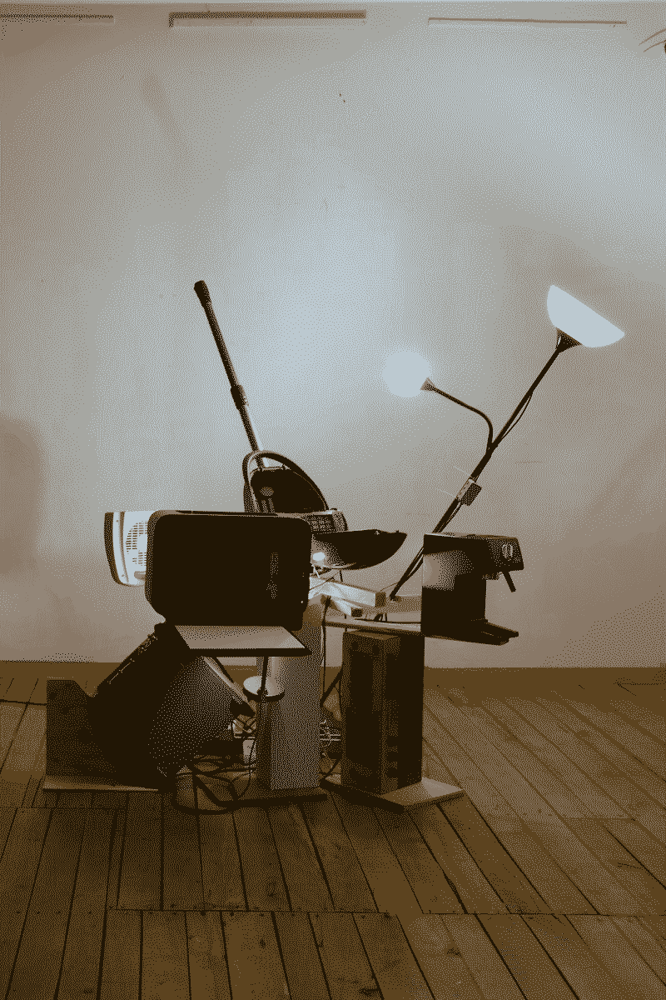
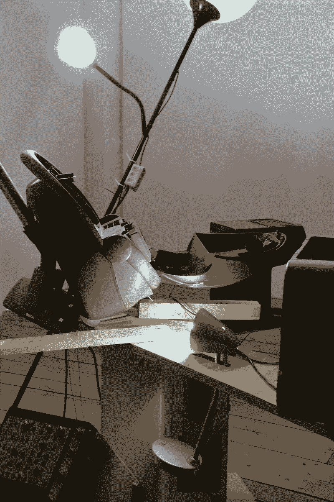
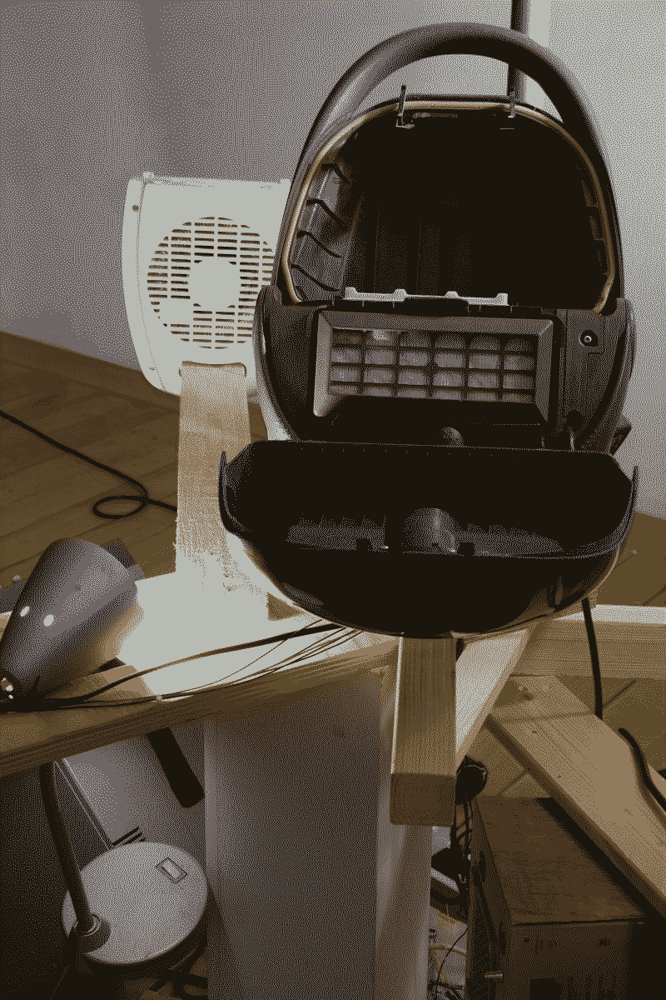

Die Bremer Stadtmusikanten(self-portrait)
I collected discarded appliances to create a sound sculputre. Each appliance is designed to respond to the sounds or movements of the others.
Sound Sculpture
<Just Another Intelligence(WIP)>, Bremen(Germany), 2026
Hochschulpreis Digitale Medien, 1. Prize - 2026

Die Bremer Stadtmusikanten: Self-Portrait is a sound sculpture
ensemble composed of discarded household appliances, functioning as
a real-time interactive system. This project is an evolution of my
previous inquiry into "failed utility," which began with a discarded
vacuum cleaner modified into a "confetti machine."(The Technique of Body Transformation(for the vacuum cleaner))
Through a conceptual dialogue with the object, I recognized a form
of "agency" within these machines, leading to this current ensemble
where each object reacts to one another in a spontaneous
structure—mirroring a jazz ensemble that alternates between
individual solos and collective mechanical harmony.
The conceptual framework of this work is deeply rooted in the
allegory of the Bremer Stadtmusikanten. In the original narrative,
beings deemed "useless" converge to seek a new identity in the "Free
City" of Bremen—a historical symbol of liberation from systems of
bondage. I project my own identity onto these appliances,
empathizing with their status as objects discarded because they
could no longer fulfill their socially expected roles. As an artist
navigating an uncertain future without a traditional safety net, I
feel a profound resonance with these machines. Their "mechanical
noise" and shifting tensions reflect the anxiety and depression that
often accompany life in a culture where individuals are judged
primarily by their "social productivity."
To visualize this psychological state, I deliberately avoided
decorative aesthetics and technological spectacle. Instead, I
employed a precarious sculptural language—utilizing tilted
arrangements and "cliff-edge" compositions—to manifest the weight of
uncertainty and the tension of embarking on an unconventional path.
Ultimately, this work is not a singular, reductive message. It is a
manifestation of multi-layered strata: a clash of historical
allegory, a fairytale-like imagination toward technology, and a raw,
personal vulnerability as both an artist and an outsider.

